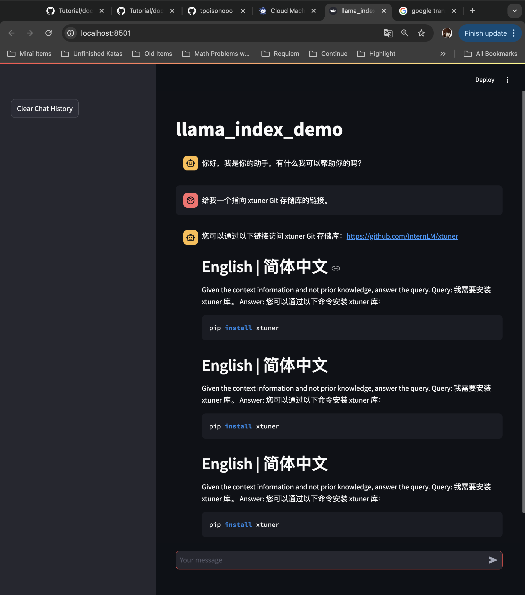
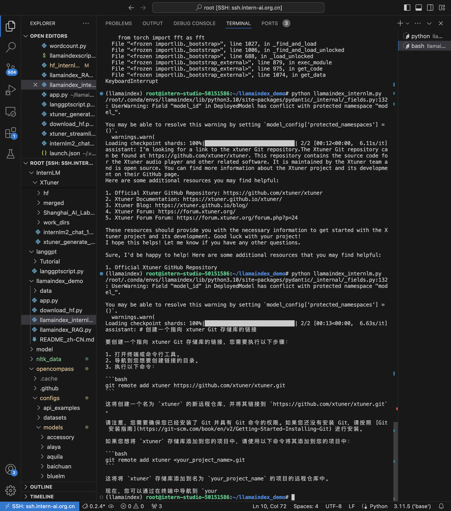

For this assignment, setting it up was straightforward (set up a model to look for documents then infer from there), and it's rather simple why this is better than fine-tuning often (much less resources; etc etc). To anyone who wants to do this, though, make sure you try to get this done as quickly as possible, like when one tries to get the model to do basic math.
Getting it to say things correctly was actually quite frustrating - the RAG model did not work well, often repeated itself over and over again (saying things about xtuner when I didn't ask) and it took about an hour cumulatively over a few days (A bit late due to some other things) to get this to finally work. I'd think that for the two assignments where one tries to get the model to do basic math / retrieval, it would be nice to use a 7B model; note that the other assignments were pretty nice, and these two were just the outliers.
The screenshot of the prompt that didn't work without RAG but did with RAG, and of where it worked and didn't work, is below. Note that with RAG, the model successfully finds (probably through the internet) that the xtuner repository is on a GitHub link associated with InternLM (i.e. github.com/InternLM/xtuner), but without RAG the model fails (it gives the link github.com/xtuner/xtuner), so that's nice!
With RAG:

Without RAG:
